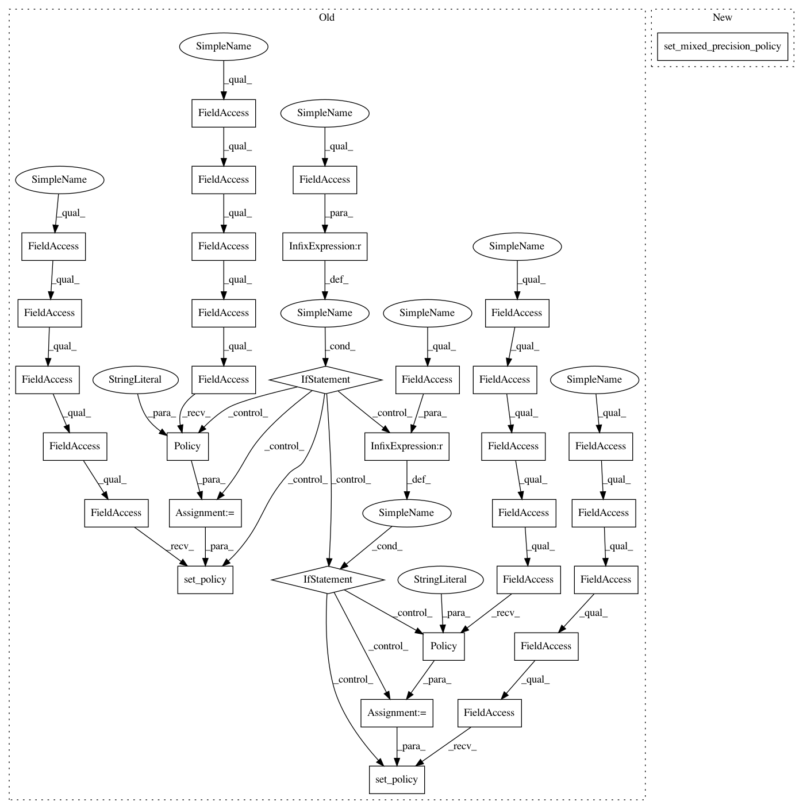

fb35d6bef6eecc640fb865dd2fc73d8fee2a93b6,official/vision/image_classification/resnet_ctl_imagenet_main.py,,run,#Any#,98
Before Change
enable_xla=flags_obj.enable_xla)
dtype = flags_core.get_tf_dtype(flags_obj)
if dtype == tf.float16:
policy = tf.compat.v2.keras.mixed_precision.experimental.Policy(
"mixed_float16")
tf.compat.v2.keras.mixed_precision.experimental.set_policy(policy)
elif dtype == tf.bfloat16:
policy = tf.compat.v2.keras.mixed_precision.experimental.Policy(
"mixed_bfloat16")
tf.compat.v2.keras.mixed_precision.experimental.set_policy(policy)
// This only affects GPU.
common.set_cudnn_batchnorm_mode()
// TODO(anj-s): Set data_format without using Keras.
data_format = flags_obj.data_format
After Change
keras_utils.set_session_config(
enable_eager=flags_obj.enable_eager,
enable_xla=flags_obj.enable_xla)
performance.set_mixed_precision_policy(flags_core.get_tf_dtype(flags_obj))
// This only affects GPU.
common.set_cudnn_batchnorm_mode()
In pattern: SUPERPATTERN
Frequency: 3
Non-data size: 33
Instances
Project Name: tensorflow/models
Commit Name: fb35d6bef6eecc640fb865dd2fc73d8fee2a93b6
Time: 2020-02-24
Author: hongkuny@google.com
File Name: official/vision/image_classification/resnet_ctl_imagenet_main.py
Class Name:
Method Name: run
Project Name: tensorflow/models
Commit Name: fb35d6bef6eecc640fb865dd2fc73d8fee2a93b6
Time: 2020-02-24
Author: hongkuny@google.com
File Name: official/vision/image_classification/resnet_imagenet_main.py
Class Name:
Method Name: run
Project Name: tensorflow/models
Commit Name: fb35d6bef6eecc640fb865dd2fc73d8fee2a93b6
Time: 2020-02-24
Author: hongkuny@google.com
File Name: official/nlp/transformer/transformer_main.py
Class Name: TransformerTask
Method Name: __init__
Project Name: tensorflow/models
Commit Name: fb35d6bef6eecc640fb865dd2fc73d8fee2a93b6
Time: 2020-02-24
Author: hongkuny@google.com
File Name: official/vision/image_classification/resnet_ctl_imagenet_main.py
Class Name:
Method Name: run